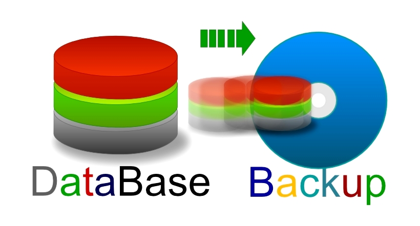
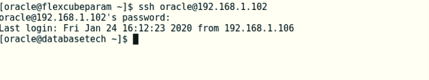
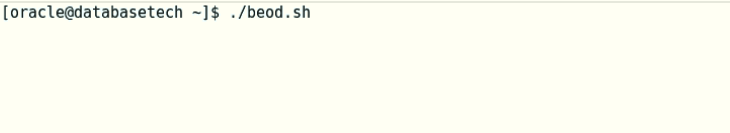
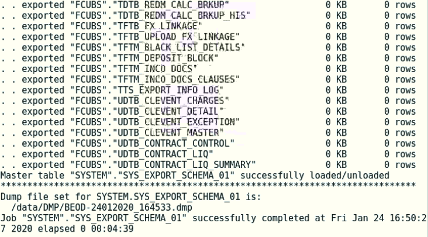
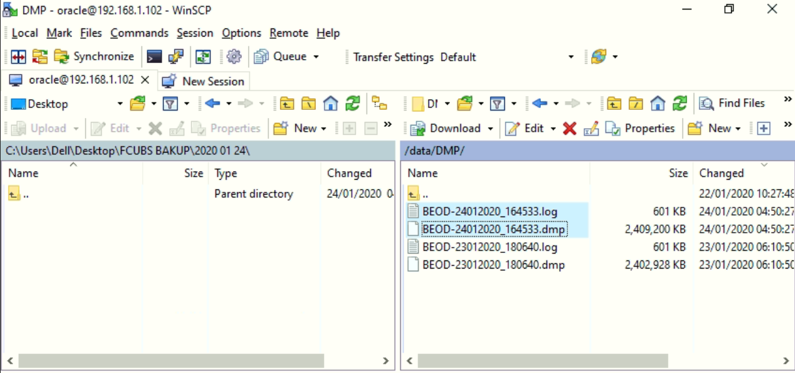

Database backup

Database backup is the process of backing up the operational state, architecture and stored data of database software. It enables the creation of a duplicate instance or copy of a database in case the main database crashes, is corrupted or is lost.
There are several ways to take a database backup, like expdp (export dump), exp (the traditional export dump), tar (copy of physical files), and rman (Oracle Recovery Manager)…
For Oracle FLEXCUBE, and exactly before starting the EOD operation, we will use the expdp method to take our database backup.
Before we proceed, we will explain the Oracle Database, and how the backup may be different from system/application to another.
The Oracle Database is set of multiple objects like: Tables, Views, Triggers, Sequences, Functions, Procedures, Packages, and many other objects.
Some applications may only use Tables. In this case the backup should include tables and there will be no need to backup all the other objects.
Another application may use Tables and Views. In this case we should backup these 2 objects and ignore the remaining ones.
So, the idea is to take a backup of all objects that are used by the application. We call it a full database backup.
The Oracle FLEXCUBE solution uses all the database objects mentioned before (Tables, Views, Triggers, Sequences, Functions, Procedures, and Packages) in addition to some other objects that are not listed here.
However, for the EOD purpose, there is no need that our backup to include all these objects (full backup), because most of them will remain unchanged even after the EOD operation complete. The only objects that change before and after the EOD are Tables data, and Sequences. Therefore, our backup should include at least these 2 objects. Consequently, the backup time and space will be less than the full database backup.
The export command should include the following option: INCLUDE=TABLE,SEQUENCE
In this example:
Using MobaXterm, open ssh session to the database server: ssh oracle@192.168.1.102

Run the script: ./beod.sh

This script will take a database backup (tables and sequences). We will use this backup to restore the database in case of any failure during the EOD later on.
The Backup name = BEOD-"server time".dmp
When database backup completed, the output should be like the following picture:

Note that the backup destination is: /data/DMP/
When the EOD compete (status =C) for all branches. We should take another database backup using MobaXterm by running the script: ./aeod.sh (follow the same steps as ./beod.sh).
The Backup name = AEOD-"server time".dmp
When the ./aeod.sh complete, you will find the backup on the database server under the following directory: /data/DMP/
Use WinScp to copy the generated backup to external hard drive.

beod.sh = expdp system/sys DIRECTORY=DMP DUMPFILE=BEOD-`date '+%d%m%Y_%H%M%S'`.dmp SCHEMAS=fcubs INCLUDE=TABLE,SEQUENCE PARALLEL=4 LOGFILE=BEOD-`date '+%d%m%Y_%H%M%S'`.log
aeod.sh = expdp system/sys DIRECTORY=DMP DUMPFILE=AEOD-`date '+%d%m%Y_%H%M%S'`.dmp SCHEMAS=fcubs INCLUDE=TABLE,SEQUENCE PARALLEL=4 LOGFILE=AEOD-`date '+%d%m%Y_%H%M%S'`.log